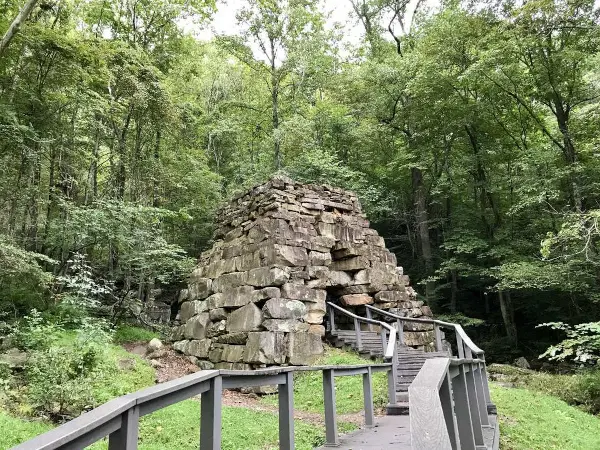
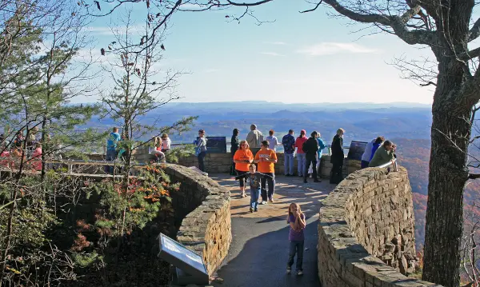
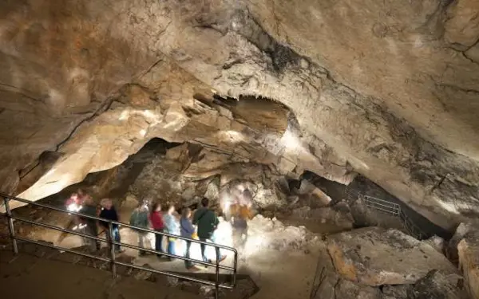

Attractions of the Gap
The Cumberland Gap holds a wealth of history and natural history. Filled with antique architecture, storefronts, and homes dating back to the 19th and early 20th centuries. Step back in time and experience a town surrounded by ancient mountains. You can stay at The Olde Mill Inn Bed & Breakfast, a charming sawmill turned inn dating back to the 1890s. The Mill goes back to Tennessee's colonial days. Daniel Boone's brother's family and the family of Chief Black Fox ran the mill for over 100 years. The town is perfect to walk through, with the Gap Creek Coffee House, several free mini libraries, antique stores, two art galleries, and locally owned restaurants all within easy walking distance. Come explore the quaint town of Cumberland Gap
Cumberland Gap's history in the Civil War
The Cumberland Gap played a significant role during the American Civil War. Its strategic location made it a crucial point of interest for both the Union and Confederate forces. Before the Civil War, the Cumberland Gap was already well-known as a natural passage through the mountains. Native American tribes, including the Shawnee and Cherokee, used the gap as a trade route for centuries. When the Civil War broke out in 1861, control over the Cumberland Gap became important for both sides. The Union recognized the strategic value of the gap as it provided a potential invasion route into the heartland of the Confederacy. Confederate troops, on the other hand, saw the gap as a defensive position to protect their territories. The town changed hands several times throughout the war but ultimately was held by the Union forces. The people native to the area were mostly pro-Union, a rare sight in the South.
Adventure Around the Gap
The Cumberland Gap region is renowned for its natural beauty and attracts outdoor enthusiasts, nature lovers, and history buffs alike. Here are some of the key natural attractions found in the Cumberland Gap area:
🌲Cumberland Gap National Historical Park: This national park encompasses a vast area and offers numerous opportunities to explore nature. It features more than 85 miles of hiking trails, including the famous Wilderness Road Trail, which follows the historic path used by pioneers heading west.
🌲Pinnacle Overlook: Situated within Cumberland Gap National Historical Park, Pinnacle Overlook provides breathtaking panoramic views of the surrounding mountains and valleys. It is accessible via a short hike and is particularly stunning during the fall when the foliage turns vibrant colors.
🌲Gap Cave: This magnificent limestone cave is located within Cumberland Gap National Historical Park and offers guided tours. Visitors can explore the underground world of stalactites, stalagmites, and other geological formations.
🌲Tri-State Peak: Found within Cumberland Gap National Historical Park, Tri-State Peak is a unique attraction where the borders of Kentucky, Tennessee, and Virginia converge. A short hike leads to an overlook where visitors can stand in all three states simultaneously.
The iron furnace
Cumberland Gap National Historical Park pinnacle overlook
Cumberland Gap Cave